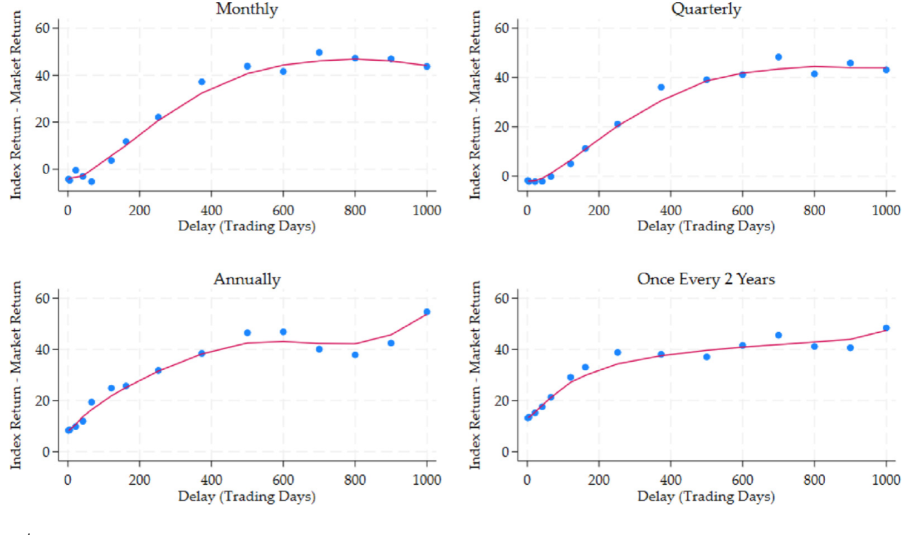
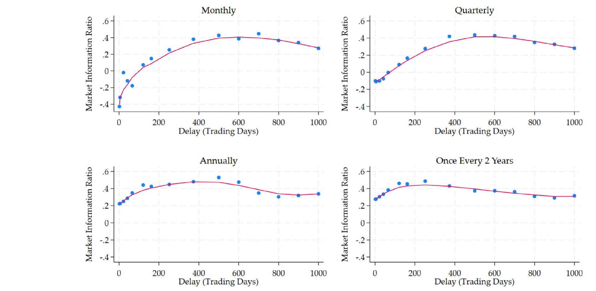
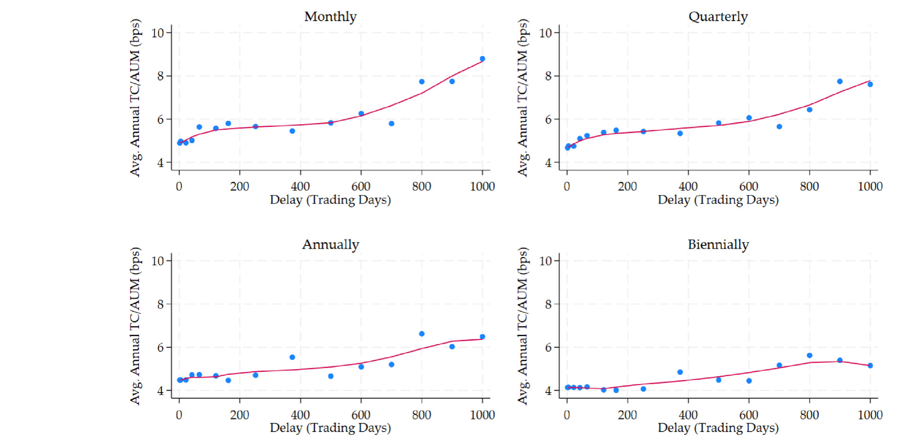
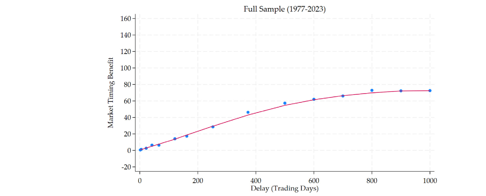
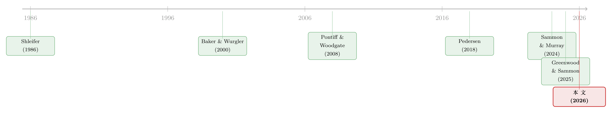

你以为买的是「整个市场」，其实买的是一套交易规则
本文读的是 Sammon & Shim (2026, Journal of Financial Economics)：市值加权指数为了跟住「市场构成」的变化（增发、回购、IPO）必须再平衡，而这些构成变化恰恰是企业在「择时」的产物——于是「被动」的指数基金在不知不觉中替你做了一笔糟糕的市场择时。被动投资者为此付出的隐性代价约为每年 46–69 bps，比基金费率高出一个数量级；只要让指数「睡得更久一点」（少做再平衡、推迟采用最新股本数据），每年就能省下约 50 bps。
1 一个被反复念诵的「常识」，和它的裂缝
资本资产定价模型（CAPM）与现代组合理论给了我们一句几乎成为信仰的箴言：持有市场组合（market portfolio）是最优的。落到实践里，「拥有市场」最简单的办法，就是买一只指数基金——金融顾问这么劝，学者也这么说，连「what's the one piece of advice you'd give」这种问题的标准答案都是「买一只宽基指数基金」。
可问题是：当你买下一只指数基金时，你真的「拥有了市场」吗？
这里藏着一道几乎人人都忽略的裂缝。你买的并不是「市场」本身，而是一只指数；而指数不是一个客观存在的东西，它是一套规则——决定持有哪些股票、各持多少、何时买何时卖。指数基金又几乎完美地复制了它所跟踪的指数（跟踪误差常常只有每年 5 bps 以下）。于是，你以为自己买下的是「整个股票市场」，实际上买下的是某家指数公司写的一份再平衡规则手册。
接着，一个自然的问题就冒出来了：这套规则，会让基金在什么时候交易？答案出人意料地干净——只有当市场构成发生变化时，一只市值加权的指数基金才需要交易。增发、回购、IPO、退市……这些事件改变了「谁占多大份额」，基金才不得不跟着调仓。
而真正关键的一步在于：这些构成变化，并不是从天上随机掉下来的。企业在股价高估时倾向于增发、IPO 扎堆上市，在股价低估时倾向于回购。这一点，几十年的公司金融文献早就反复证明过了。于是反转出现了——一只号称「被动」、号称只想「拥有市场、避开任何主动择时」的指数基金，正通过它的再平衡规则，机械地、亦步亦趋地替企业的择时行为埋单。它在高位接盘别人增发的股票，在低位卖出别人回购的股票。这不是被动，这是一笔被规则强制执行的、糟糕的市场择时。
本文要做的，就是把这件事量化出来：这笔隐性的择时代价到底有多大？又该如何把它省下来？
2 一把钥匙：所有权比例框架
要把上面这个故事讲透，作者先递给我们一把极简却极锋利的钥匙——所有权比例（ownership ratio）。
它的出发点是一个看似平凡的等价命题：持有一个市值加权的全市场组合，等价于持有每只股票相同比例的流通股。定义股票层面的所有权比例为基金持有的股数除以该股票的流通股数；再定义基金层面的所有权比例为基金的资产管理规模（AUM）除以全市场总市值：
$$ o_{i,t} \equiv \frac{h_{i,t}}{S_{i,t}}, \qquad \Omega_t \equiv \frac{AUM_t}{\sum_{j} P_{j,t}\,S_{j,t}}. $$
「市值加权」这个词，翻译成所有权比例的语言，就是一句话：每只股票的所有权比例都相等，且都等于基金层面的所有权比例，即 \(o_{i,t} = \Omega_t\) 对所有 \(i\) 成立。换句话说，一只市值加权的全市场基金，本质上只维护一个数——它在每只股票上都持有同样比例 \(\Omega_t\) 的股本。
于是基金的持仓可以写成下面这个极其朴素、却是全文枢纽的恒等式：
盯着这个式子看，一切就都通了。\(\Omega_t\) 是一个对所有股票公用的标量，它本身只随基金的资金流（flow）而变。那么在没有申购赎回的情况下，持仓 \(h_{i,t}\) 唯一会变动的原因，就是右边的 \(S_{i,t}\) 变了——也就是某只股票增发或回购了股本。
这就把「指数基金为什么要再平衡」这个问题压缩到了极致：构成变化是市值加权指数基金需要再平衡的唯一理由。当股票 \(i\) 通过增发（比如 SEO 或股权激励）增加了 \(\Delta S_i\) 股，它的所有权比例就掉了下来，和别人不再对齐；为了重新对齐，基金必须买入 \(\Omega_t \cdot \Delta S_i\) 股，并按比例卖出其余所有股票来融资。回购、IPO、退市，逻辑完全相同。
这把钥匙还顺手澄清了一件常被混淆的事：指数只在它更新「指数合格股本」时才调仓，而指数基金还要额外处理资金流和现金管理。本文把两者近似等同（现实中指数基金相对指数的跟踪误差确实极小），从而把全部注意力都放在指数规则本身上。一个市值加权指数设计者真正能动的「自由度」其实只有两个：多久再平衡一次，以及用多新的股本数据去更新指数合格股本。仅此两点。
3 把指数基金的持仓拆成四块
有了这把钥匙，作者把指数基金在任意时刻的持仓拆解成四个组合的叠加：
- 上一次再平衡之后留下来的存量组合；
- 存量股票的多空再平衡组合（intensive margin，集约边际）——即对老股票按股本变化的买卖；
- 新增/剔除成分股的多空再平衡组合（extensive margin，扩展边际）——即 IPO 纳入、退市剔除；
- 资金流驱动的等比例缩放组合（flow-induced scaling）。
真正承载「市场择时」故事的，是第 2、3 块——那两个多空再平衡组合。它们刻画的正是「为了跟住构成变化，基金被迫买什么、卖什么」。
那么，这笔被迫的交易，赚钱还是赔钱？
4 主要结果：一笔每年亏 4.6% 的强制交易
答案相当刺眼。把这两个再平衡组合合在一起，年化收益约为 −4.6%；相对「Fama-French 五因子 + 动量 + 反转 + 增发因子」模型的年化 alpha 约为 −4.0%。换个方向说同一件事：如果你反着这些指数基金去交易（做空它们买的、做多它们卖的），年化能赚到约 4.61%——这也正是被动投资者拱手送出去的那部分。
更耐人寻味的是它的因子暴露。这两个再平衡组合在价值（HML）、盈利（RMW）、投资（CMA）三个因子上都是显著为负的载荷。也就是说，一个买全市场指数、本意是「我什么因子都不想赌、只想要市场」的投资者，却在毫不知情的情况下，被规则塞进了一个反价值、反盈利的因子头寸。这对「为了避开非市场因子才买宽基」的人来说，堪称黑色幽默。
这里有一个容易被弄反的符号。从基金自己的视角，它的再平衡交易组合年化是 −4.6%（亏的）；文中常说的 4.61% 指的是"捕捉这些交易"的多空组合按盈利方向计的收益。两个数大小几乎相同、符号相反，说的是同一件事：基金站在了亏钱的那一边。
不过，再平衡组合只占基金 AUM 的一小部分——实证上大约 10% 到 15%。所以要算到基金层面的拖累，得乘上这个权重。一道信封背面的算术就给出了结论：−4.6% 的再平衡组合收益，在基金层面体现为每年 46–69 bps 的业绩拖累。
请把这个数字和你熟悉的另一个数字放在一起：指数基金的费率（expense ratio）。投资者几十年来盯着费率斤斤计较，从 20 bps 砍到 3 bps、2 bps；可底层指数的再平衡规则，悄悄施加了一个高出整整一个数量级的隐性成本。你省下的费率，可能还不够填这个坑的零头。
（关于「指数基金到底在多大程度上左右了价格、又如何反过来被规则牵着走」，可以参照需求侧资产定价的视角，见《弱替代：因子动物园是从哪里冒出来的？》。）
5 这些指数，真的「跟住市场」了吗？
到这里你可能会反问：再平衡组合亏钱，会不会只是为了「跟得更紧」而付出的必要代价？毕竟被动投资的第一要义是别偏离市场。
作者于是定义了一个新指标：市场跟踪误差（market tracking error, MTE）——指数收益与「真正的每日全市场收益」之差的标准差。注意，这和传统意义上的（指数）跟踪误差不是一回事：传统跟踪误差衡量的是基金相对它所跟踪的指数偏了多少；而 MTE 衡量的是指数相对真实市场偏了多少。作者把「真实的每日美国股市」定义为：所有在主要交易所交易、前一日有有效收盘价的普通股（CRSP share code 10、11，exchange code 1–3）按市值加权、每日再平衡的组合。
结果是：主流市值加权指数的 MTE，从每年约 75 bps 一路高到 300 bps 以上。而跟踪这些指数的大基金，相对指数的跟踪误差只有每年 5 bps 左右。这意味着：基金跟指数贴得严丝合缝，可指数本身离「真实市场」并不近。按照所有权比例框架的逻辑，一只市值加权指数若有这么大的 MTE，根源只能是它的再平衡政策。
那么问题就自然升级了：既然现有指数已经偏离了市场（MTE 不小），又因为糟糕择时而少赚了钱——有没有别的规则，能让投资者过得更好？
6 让指数「睡一觉」：少调仓、晚更新
作者构造了一系列假想指数（hypothetical indexes），沿着那两个唯一的自由度展开：
- 再平衡频率：从每月一次，到每两年一次；
- 股本数据的最小延迟（shares outstanding delay）：从
0 天到4 年——即一只股票的股本变化，必须至少"陈放"这么久，才允许在下一个再平衡日被用来更新指数合格股本。
他们用 1977 到 2023 年的股本与收益历史，精确地算出每一种假想指数会如何再平衡、收益几何（并扣除了下一节讲的交易成本）。
结论清晰得近乎单调：相对每日全市场的超额收益，随延迟拉长、随再平衡变稀疏而上升。其中延迟比频率更稳健——一个两年延迟，无论再平衡多频繁，都能带来每年约 50 bps 的超额收益。而且收益随延迟的提升大体单调，但在两年之后趋于平台，再拖下去边际收益就没了。

Figure 1: Excess index return
这就是那只「睡眠型（sleepy）」指数：每一到两年再平衡一次，并对股本变化设一到两年的内置滞后。它把每年的收益硬生生抬高了约 40 到 50 bps。
直觉其实很美：企业增发往往在股价高位、回购往往在低位（这是被反复验证的择时行为）。如果你立刻跟着股本变化调仓，就等于立刻在高位接盘、低位甩卖；而如果你让子弹飞一会儿，等增发后的高估部分回吐、回购后的低估部分修复，再去对齐所有权比例，你就避开了最糟糕的那段择时。延迟，本质上是在给「企业择时」降温。
7 收益和跟踪误差的拔河：市场信息比率
当然，天下没有免费的午餐。延迟越长、调仓越稀疏，收益是涨了，但 MTE 也机械地变大了——你越是对市场构成迟钝，你的组合就越偏离真实市场。这是定义里就注定的权衡。
那该怎样在「收益」和「贴近市场」之间取舍？作者借用信息比率的思路，定义了市场信息比率（market information ratio, MIR）：指数收益（扣交易成本后）减去每日全市场收益，再除以该指数的 MTE。它回答的是本文最初的那个动机——如果你的目标是拥有整个市场，那么每偏离市场一单位，你能换回多少超额收益？
$$ MIR = \frac{r^{\text{index}}_t - r^{\text{mkt}}_t}{MTE}. $$
既然现实中的指数本来就有不小的 MTE，那么一个合理的标准是：既然总要偏离，至少要偏得划算。结果是：股本延迟在 1 到 2 年 时，MIR 大致达到最大。也就是说，那只「睡眠型」指数不仅赚得更多，而且每承担一单位市场跟踪误差所换回的收益也最高。

Figure 3: Market information ratio
8 收益从哪里来？交易成本，还是择时？
到这里，一个严谨的读者会追问：这 50 bps 的改善，到底来自省下的交易成本，还是来自更好的市场择时？这两条机制的政策含义截然不同。
作者把交易成本建模为价格冲击（price impact）成本——这条思路接续了 Almgren & Chriss (2001) 等人的执行成本框架。一个细节很重要：在如今的市场里，价格冲击往往在再平衡日之前就已发生，因为有人专门抢跑（front-run）指数基金的可预期需求（Greenwood & Sammon, 2025 记录了「消失的指数效应」正是这种抢跑的结果）。所以可以把这部分成本理解为：如果没人抢跑，它本会在再平衡生效日的收盘集合竞价里由基金直接承担。
价格冲击曲线是递增且凹的（increasing and concave）——交易量越大，单位成本边际递减。于是少做再平衡能蹭到曲线上更平坦的那一段，省下交易成本。但量级上，这部分省下的钱只有每年约 3 到 9 bps，和指数基金的费率是同一量级。

Figure 4: Estimated trading costs by rebalancing frequency and shares outstanding delay
而另一边，两年延迟带来的收益改善是 50 bps。两相对照，结论一锤定音：收益的改善绝大部分来自更好的市场择时，而非省下的交易成本——后者比前者小了整整一个数量级。换句话说，被动投资者真正在流血的地方，不是手续费，而是被规则强制执行的、对企业增发回购的糟糕跟随。

Figure 5: Market timing
9 一个漂亮的反证：用因子动态交易能复制吗？
作者还做了一个收尾性的、也很聪明的检验。既然再平衡规则本质上是在「调整指数对股本变化的反应方式」，那能不能干脆直接动态交易市场因子和一个增发因子（issuance factor），来复制延迟再平衡的效果？
结果颇具说服力：一个事前（ex-ante）版本的动态交易策略，夏普比率确实略高于延迟再平衡指数——但它是靠大幅推高市场跟踪误差、并交出更低的平均收益换来的。算下来它的 MIR 更低，而且要追平市场的平均收益还得加杠杆。这反过来印证了：「睡眠型」延迟再平衡更实在地有利于投资者，它在避开增发相关成本的同时，没有把投资者拽离市场太远。
10 文献脉络
把这篇论文放回它生长的土壤里，会更清楚它的位置。
这条线最古老的根，是关于股票需求曲线是否向下倾斜的争论——Shleifer (1986)、Harris & Gurel (1986) 借标普 500 成分股调整发现了价格压力，Wurgler & Zhuravskaya (2002) 进一步刻画了套利如何（不完全地）拉平需求曲线。这给「指数交易会动价格」奠定了第一块砖。
另一条根来自企业择时。Baker & Wurgler (2000) 发现总量层面的股权增发能预测未来市场收益；Dichev (2007) 用美元加权收益证明投资者实际拿到的回报比买入持有低约每年 1%，正是因为资金进出的时点不对。横截面上，Pontiff & Woodgate (2008)、Fama & French (2008a)、Daniel & Titman (2006) 直到 Baba-Yara et al. (2024) 一路确认了净增发对未来收益的负向、且长达数年的预测力；IPO/SEO 的长期跑输则有 Ritter (1991)、Loughran & Ritter (1995) 等经典文献。

把这两条根接到「指数基金」上的关键一跃，是 Pedersen (2018)——它也指出指数基金必须随市场构成变化而交易，但落点在主动管理者如何借此正当化高费率。本文与之最近，却把视角调转：它论证指数基金对构成变化其实并不真正"被动"，而是通过再平衡政策的选择成为「主动的响应者」，而响应的速度恰恰给被动投资者造出了成本。再加上 Greenwood & Sammon (2025) 关于抢跑、Sammon & Murray (2024) 关于 IPO 后机械买入跑输、Arnott et al. (2023) 关于「躲开再平衡人群」能赚 alpha——这篇论文正好坐落在「指数设计」这一新兴文献的交汇点上，并贡献了那把统摄全局的所有权比例钥匙。
（关于「市场组合」这个概念本身有多脆弱、它其实可能只是一小撮巨头，参见《两种市场收益的故事：当「市场组合」其实只是一小撮巨头》；关于多空组合常常意外地带着别的暴露，参见《流动性的方向感：异象多空组合，其实并不「流动性中性」》。）
11 评论与延伸（Q&A + 研究方向）
(a) 几个可能的疑问
Q：这跟传统的「指数效应」、「再平衡价格压力」研究有什么本质区别？
传统研究（如 Shleifer 1986、Harvey et al. 2025）关注的是再平衡引发的短期价格压力及其随后的反转，时间窗很短。本文明确把落点放在更长的持有期收益上，并论证它更可能由糟糕的市场择时驱动，而非可预测的价格压力——它发现资金流驱动的等比例缩放在季度频率上不产生可预测收益，说明若真有价格压力，压力与反转都在季度窗口内消化掉了。一句话：别人看的是「调仓那几天股价怎么动」，本文看的是「跟着企业择时买卖，一年下来亏多少」。
Q：「市场跟踪误差（MTE）」和我们平时说的跟踪误差不是一回事？
不是。平时说的跟踪误差是基金 vs. 它跟踪的指数（现实中只有每年
5 bps左右，小得可以忽略）；MTE 是指数 vs. 真实的每日全市场（高达75–300 bps）。本文的洞见正是：大家盯着前者精益求精，却忽略了后者——指数本身就离市场不近。
Q：让指数「睡两年」，会不会偏离市场太多、风险失控？
会偏更多（MTE 机械地上升），这是诚实的代价。但作者用 MIR 回应：在
1–2 年延迟处，每单位偏离换回的超额收益最高。而且收益改善在两年后趋于平台，所以不必无限延长。这是一个「划算的偏离」，不是无脑放任。
Q：50 bps 听起来不多，值得大动干戈吗？
关键在对照系。它比指数基金费率（
2–20 bps）和省下的交易成本（3–9 bps）都高出一个数量级。在近 50 年样本里，仅靠微调指数设计，就能把这笔钱（以及更多）返还给投资者。对管理着数万亿美元的被动资金而言，这绝非小数。
Q：既然反着指数基金交易能年赚 4.61%，为什么市场没把它套利掉？
因为承担这笔交易的是体量极大、且以「跟住指数」为硬约束的被动资金——它们的目标函数里压根没有「这笔再平衡赚不赚钱」这一项，规则要求买就买。套利者（如 Arnott et al. 2023）确实在抢这块钱，但被动资金的规模与刚性使得这个偏差能长期存在。这本身就是「被动其实不被动」的市场结构后果。
Q：这个结论只是美国、只是这几族指数的特例吗？
主样本聚焦标普（500/400/600）、罗素（1000/MidCap/2000/3000）与 CRSP 指数族，
2344个 fund-quarter、82只指数基金；附录扩展到全部被动基金（41,153个 fund-quarter、1376只）。机制是会计恒等式 + 企业择时，逻辑上不限于美国，但其他市场的增发/回购行为与流动性结构不同，量级需另行验证。
(b) 几个可能的研究问题与提案
1. 把「所有权比例」框架搬到公司债指数上
【经济故事】公司债指数同样市值（面值）加权，同样要随发行、到期、评级变动、被剔除而再平衡；而企业债券发行的择时（利率低位、信用利差窄时抢发）甚至比股权更明显。被动债券基金是否也在机械地高位接盘新发债？ 【可行性】中。需要 TRACE 成交 + Mergent FISD 发行数据 + 主流债券指数成分（Bloomberg/ICE）。识别难点在于债券流动性差、价格冲击难估，且指数纳入规则（最小发行规模、剩余期限）更复杂——但所有权比例的会计逻辑可直接移植。
2. 「睡眠型」延迟对外资被动持有人的差异化影响
【经济故事】外资被动资金（如跟踪 MSCI、FTSE 的全球指数）在新兴市场的纳入/扩容往往伴随剧烈的资金流与择时风险。若不同投资者群体（本土 vs. 外资）对再平衡延迟的敏感度不同，延迟规则的福利再分配就值得研究。 【可行性】中。需要 EPFR 或基金持仓 + 指数纳入事件。识别可借纳入扩容的分阶段实施（staggered inclusion）做事件研究，但外资份额的内生性需要处理。
3. 再平衡组合的因子暴露，是否能解释「增发因子」本身？
【经济故事】本文发现再平衡组合显著负载 HML/RMW/CMA，并与增发因子相关却又有无法被已知因子解释的成分。一个反向问题是：被动资金被迫执行的这笔交易，会不会部分地制造了我们观测到的增发异象的收益？ 【可行性】高。所需数据（CRSP/Compustat、因子收益、被动持仓）都现成。识别可用被动份额的横截面变异（如 Chinco & Sammon 2024 对被动份额的测算）做工具/分组检验。
4. 抢跑（front-running）如何改变延迟规则的最优值？
【经济故事】Greenwood & Sammon (2025) 指出价格冲击正越来越多地前移到再平衡日之前。若抢跑者预期到「睡眠型」指数的延迟规则，他们的抢跑行为会变，从而反过来改变最优延迟长度——这是一个规则设计与市场博弈的均衡问题。 【可行性】中低。需要逐日报价/成交微观数据来识别抢跑，且要建模抢跑者的预期，识别较难，更适合「事件 + 结构模型」结合。
5. 把规则的「两个自由度」做成可投资产品后的实盘检验
【经济故事】本文是历史回测（含交易成本估计）。一个自然的下一步是：真有机构按「两年延迟、低频再平衡」运作一只基金，事后业绩是否兑现了
50 bps？尤其在抢跑、容量约束、税务等现实摩擦下。 【可行性】低（短期内）。需要真实运作的产品或托管账户数据，目前难得；但可先用更细的盘口数据把价格冲击估计做得更扎实，缩小回测与实盘的差距。
12 我的判断
这篇论文最漂亮的地方，不在某个惊人的数字，而在那把所有权比例的钥匙——它用一个近乎平凡的会计恒等式，把「指数基金为什么交易」压缩成「股本何时变、用多新的数据去认它」两个自由度，从而把一个看似无从下手的问题（指数设计的福利后果）变成了可以逐格计算的网格搜索。46–69 bps 的拖累、50 bps 的可省空间、「比费率高一个数量级」的对照——这些结论之所以有说服力，正是因为它们都长在这把钥匙上，而不是从某个黑箱回归里蹦出来的。把「被动其实是主动的响应者」这句话讲透，是本文真正的贡献。
但也有几处值得保留。其一，交易成本的估计是模型化的价格冲击，而非实际成交，凹形冲击曲线的参数选择会直接影响「省下 3–9 bps」乃至净收益的量级；既然全篇都在做净收益比较，这一块的敏感性分析读者会想看得更细。其二，反事实是历史回测：一旦某家大型指数公司真的改用「睡眠型」规则，企业的增发择时、抢跑者的行为都可能随之改变，50 bps 未必能原样兑现——这是所有「规则反事实」研究共有的卢卡斯批判式隐忧。其三，把「指数」与「指数基金」近似等同虽有现实依据（跟踪误差极小），但资金流、税务、赎回压力在极端时点可能并不那么温顺。
我接下来最想看到的，是两件事：一是把这套框架搬到公司债与信用市场，那里的发行择时更露骨、流动性更差，潜在的隐性成本可能更大；二是有人真的把「两年延迟」做成产品并积累出实盘业绩，让我们看看这 50 bps 究竟是纸面上的，还是能落进投资者口袋里的。在那之前，这篇论文已经足够改变我们对「买指数 = 拥有市场」这句口头禅的理解了——你拥有的从来不是市场，而是一套规则；而规则，是可以更聪明地写的。
参考文献
- Almgren, R., Chriss, N. (2001). Optimal execution of portfolio transactions. Journal of Risk 3, 5–40.
- Arnott, R.D., Brightman, C., Kalesnik, V., Wu, L. (2023). Earning alpha by avoiding the index rebalancing crowd. Financial Analysts Journal 79(2), 76–97.
- Baba-Yara, F., Boons, M., Tamoni, A. (2024). Persistent and transitory components of firm characteristics: Implications for asset pricing. Journal of Financial Economics 154, 103808.
- Baker, M., Wurgler, J. (2000). The equity share in new issues and aggregate stock returns. Journal of Finance 55(5), 2219–2257.
- Chinco, A., Sammon, M. (2024). The passive ownership share is double what you think it is. Journal of Financial Economics 157, 103860.
- Daniel, K., Titman, S. (2006). Market reactions to tangible and intangible information. Journal of Finance 61(4), 1605–1643.
- Dichev, I.D. (2007). What are stock investors' actual historical returns? Evidence from dollar-weighted returns. American Economic Review 97(1), 386–401.
- Fama, E.F., French, K.R. (2008a). Average returns, B/M, and share issues. Journal of Finance 63(6), 2971–2995.
- Greenwood, R., Sammon, M. (2025). The disappearing index effect. Journal of Finance 80(2), 657–698.
- Harris, L., Gurel, E. (1986). Price and volume effects associated with changes in the S&P 500 list: New evidence for the existence of price pressures. Journal of Finance 41(4), 815–829.
- Harvey, C.R., Mazzoleni, M.G., Melone, A. (2025). The unintended consequences of rebalancing.
- Loughran, T., Ritter, J.R. (1995). The new issues puzzle. Journal of Finance 50(1), 23–51.
- Pedersen, L.H. (2018). Sharpening the arithmetic of active management. Financial Analysts Journal 74(1), 21–36.
- Pontiff, J., Woodgate, A. (2008). Share issuance and cross-sectional returns. Journal of Finance 63(2), 921–945.
- Ritter, J.R. (1991). The long-run performance of initial public offerings. Journal of Finance 46(1), 3–27.
- Sammon, M., Murray, C. (2024). Primary capital market transactions and index funds. SSRN.
- Shleifer, A. (1986). Do demand curves for stocks slope down? Journal of Finance 41(3), 579–590.
- Wurgler, J., Zhuravskaya, E. (2002). Does arbitrage flatten demand curves for stocks? Journal of Business 75(4), 583–608.